Le même patient, pour la troisième fois
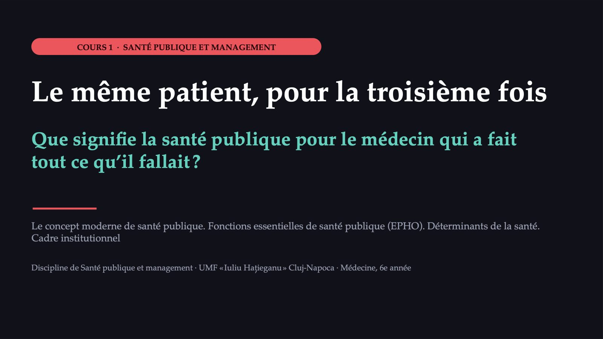
1 / 43Trois cas en deux heures
![LE PLAN DE LA SÉANCE Trois cas en deux heures La garde Le cabinet Le service Kahoot 0′ 6′ 34′ 66′ 76′ 98′ 110′ 120′ Pause Fin Le même patient, pour la troisième fois : ce qu’est la santé publique Un cas de rougeole : qui fait la santé publique La patiente réhospitalisée : les déterminants Trois termes nouveaux : les opérations essentielles de santé publique (OESP) · les déterminants sociaux · le gradient social. La moitié du temps, c’est vous qui travaillez : vote sur téléphone, discussions avec votre voisin, camps, un jeu de rôle. Il vous faut un téléphone avec accès à Internet.](diapozitive/C01/002.jpg) 2 / 43
2 / 4360 %
 3 / 43
3 / 43Le même patient, pour la troisième fois
![LA GARDE · CARDIOLOGIE, DEUXIÈME NUIT Le même patient, pour la troisième fois FEUILLE D’OBSERVATION · EXTRAIT Homme, cinquante-cinq ans Fumeur depuis trente ans Hypertendu · obésité Motif d’admission : douleur thoracique Troisième hospitalisation en deux ans L’électrocardiogramme, la troponine, la coronarographie et le traitement suivent le protocole. Après quelques jours, le patient rentre chez lui avec une ordonnance et le conseil d’arrêter de fumer. La décision clinique était correcte. Que signifie la santé publique pour le médecin qui a fait tout ce qu’il fallait au chevet de ce patient ? Scène reconstituée ; le patient est fictif.](diapozitive/C01/004.jpg) 4 / 43
4 / 43La phrase que vous avez apportée
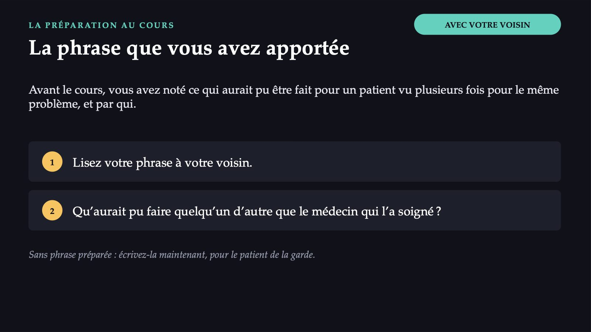
5 / 43La santé publique commence par la seconde question
 6 / 43
6 / 43Laquelle de ces décisions relève de la santé publique ?
![MENTIMETER · VOTE APRÈS LA GARDE Laquelle de ces décisions relève de la santé publique ? A Prescrire au patient le traitement de prévention secondaire. B Demander un examen complémentaire pour ce patient. C Analyser, avec les médecins de famille de la zone, combien de patients à facteurs de risque cardiovasculaire non dépistés vivent dans le comté, et proposer un programme de dépistage. D Adresser le patient à un autre spécialiste. Votez sur téléphone ; puis deux minutes de discussion avec votre voisin.](diapozitive/C01/007.jpg) 7 / 43
7 / 43La réponse apparaît après la séance
La réponse apparaît après la séance
Le même médecin, deux unités d’analyse
![MÉDECINE CLINIQUE ET SANTÉ PUBLIQUE Le même médecin, deux unités d’analyse Médecine clinique Santé publique Unité d’analyse le patient la population ou la communauté Objectif principal le diagnostic et le traitement de la maladie la prévention de la maladie, la promotion de la santé, la protection de la population Moment de l’intervention en général, après l’apparition des symptômes en général, avant l’apparition de la maladie Instruments l’examen clinique, les investigations, le traitement la surveillance, l’épidémiologie, les politiques, la législation, les programmes Mesure du succès le patient guéri ou amélioré une maladie moins fréquente et des écarts plus faibles entre groupes Comparaison didactique, construite pour ce cours : elle décrit des accents, non des frontières rigides ; le même médecin travaille souvent dans les deux registres.](diapozitive/C01/009.jpg) 9 / 43
9 / 43Une définition centenaire, élargie en chemin
![QU’EST-CE QUE LA SANTÉ PUBLIQUE Une définition centenaire, élargie en chemin 1920 Winslow, Science La science et l’art de prévenir la maladie et de prolonger la vie par les efforts organisés de la communauté. 1946 Constitution de l’OMS La santé : un état de complet bien-être physique, mental et social, et non la simple absence de maladie. 1988 Rapport Acheson Une définition concise, proche de celle de Winslow. 1998 Glossaire de l’OMS « La communauté » devient « la société » : un concept social et politique. 95/2006 Loi sur la santé Sépare l’état de santé de la population de l’effort qui la protège. 2012 Plan européen de l’OMS La même définition, avec renvoi au rapport Acheson. La santé publique : la science et l’art de promouvoir la santé, de prévenir la maladie et de prolonger la vie grâce aux efforts organisés de la société. Définition : glossaire de l’OMS de la promotion de la santé (1998), adaptée du rapport Acheson (1988).](diapozitive/C01/010.jpg) 10 / 43
10 / 43Une seule des cinq directions concerne les services médicaux
![WINSLOW, 1920 · LE TEXTE COMPLET Une seule des cinq directions concerne les services médicaux 1 l’assainissement du milieu 2 la lutte contre les infections dans la communauté 3 l’éducation de chaque personne à l’hygiène personnelle 4 l’organisation des services médicaux et infirmiers pour le diagnostic précoce et le traitement préventif 5 un mécanisme social qui assure à chacun un niveau de vie adéquat au maintien de la santé L’énumération se termine par le niveau de vie, une condition sociale : l’ouverture vers ce que l’on appelle aujourd’hui les déterminants sociaux de la santé.](diapozitive/C01/011.jpg) 11 / 43
11 / 43L’effort et l’état : deux notions, deux noms
![LOI N° 95/2006 · UNE DISTINCTION D’EXAMEN L’effort et l’état : deux notions, deux noms ASSISTANCE DE SANTÉ PUBLIQUE « l’effort organisé de la société en vue de protéger et de promouvoir la santé de la population » par des mesures politiques et législatives, par des programmes visant les déterminants et par les institutions qui fournissent les services = l’activité SANTÉ PUBLIQUE « l’état de santé de la population par rapport aux déterminants de l’état de santé » socio-économiques, biologiques, environnementaux, mode de vie, services de santé, leur qualité et leur accessibilité = l’état Winslow et le glossaire de l’OMS les réunissent sous un même nom ; la loi les sépare. Source : loi n° 95/2006 relative à la réforme du système de santé, version consolidée ; extraits.](diapozitive/C01/012.jpg) 12 / 43
12 / 4376,5 · 81,5
![À QUELLE DISTANCE SE SITUE LA ROUMANIE Décès avant 75 ans qui auraient pu être évités Évitables par la prévention et la santé publique Roumanie 264,0 UE 150,9 environ trois quarts de plus Évitables par les traitements : soins à temps et efficaces Roumanie 199,7 UE 86,8 plus de deux fois plus Taux standardisés pour 100 000 habitants, 2023 76,5 · 81,5 ans d’espérance de vie à la naissance, Roumanie et UE, 2024 : un écart de 5,0 ans (estimations) 5,8 % · 9,9 % du PIB, dépenses courantes de santé, Roumanie et UE, 2023 Source : Eurostat (liste commune OCDE-Eurostat des décès évitables ; espérance de vie 2024, valeurs estimées, UE et provisoire ; dépenses de santé).](diapozitive/C01/013.jpg) 13 / 43
13 / 43Deux interventions sans aucune ordonnance
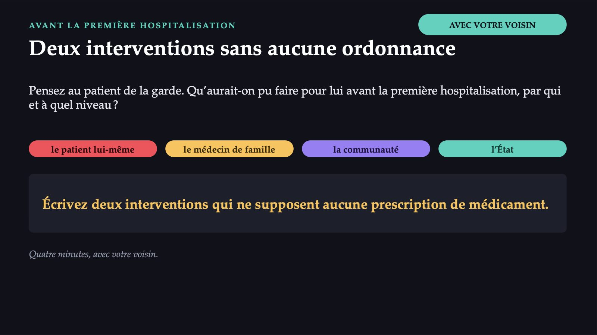
14 / 43Le cas de rougeole au cabinet
![Éruption de la rougeole, au quatrième jour (photographie d’archives) Photo : CDC/NIP/Barbara Rice · domaine public · CDC PHIL, via Wikimedia Commons LE CABINET DE MÉDECINE DE FAMILLE Le cas de rougeole au cabinet Vous êtes résident en médecine de famille. Une mère arrive avec un enfant de deux ans : fièvre, conjonctivite et une éruption qui a commencé derrière les oreilles. L’enfant n’est pas vacciné. Son traitement est simple et symptomatique. Que se passe-t-il quand la mère quitte le cabinet ? Chaque étape qui suit correspond à une fonction qu’un système de santé publique doit remplir.](diapozitive/C01/015.jpg) 15 / 43
15 / 43Un seul mot
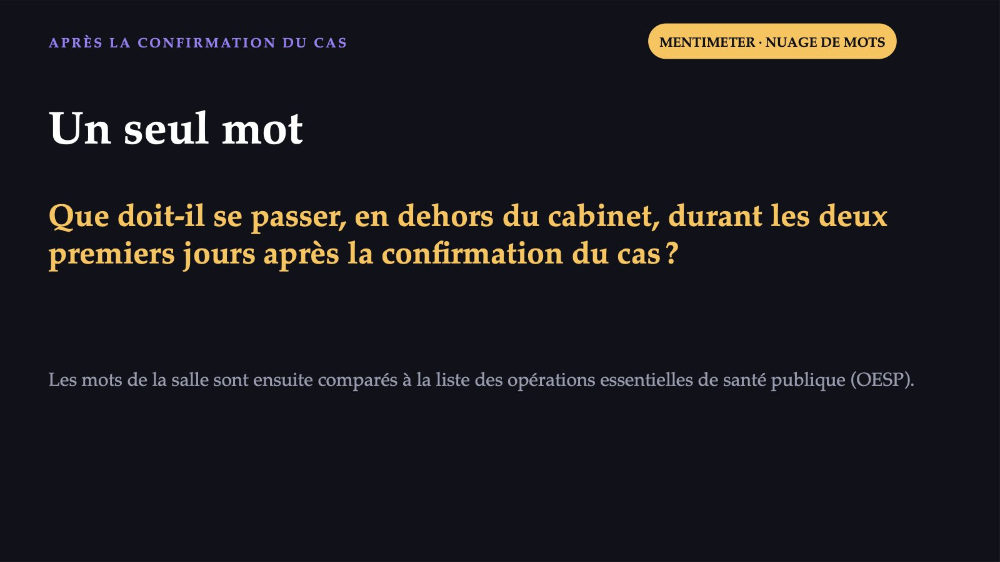
16 / 43Explozie de cazuri de rujeolă în România: doar 1 din 4 copii e vaccinat
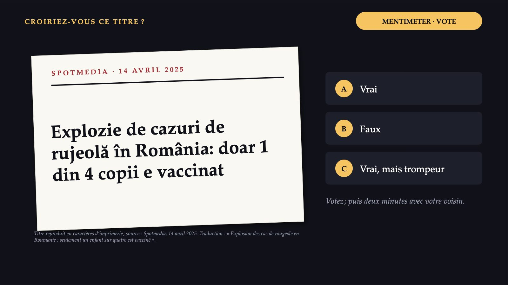
17 / 43La réponse apparaît après la séance
La réponse apparaît après la séance
Les opérations essentielles de santé publique (OESP)
 19 / 43
19 / 43Dix opérations, en deux groupes de cinq
![PLAN EUROPÉEN DE L’OMS, 2012 Dix opérations, en deux groupes de cinq OPÉRATIONS DE BASE · EPHO 1–5 1 Surveillance de la santé et du bien-être information 2 Dangers et urgences : suivi et réponse information 3 Protection de la santé 4 Promotion de la santé 5 Prévention des maladies, dépistage précoce QUI LES RENDENT POSSIBLES · EPHO 6–10 6 Gouvernance pour la santé 7 Personnel de santé publique 8 Structures organisationnelles et financement 9 Sensibilisation, communication, mobilisation sociale 10 Recherche en santé publique information EPHO 3, 4 et 5 : les services proprement dits. Les opérations d’information (1, 2 et 10) chevauchent les deux groupes. Source : Bureau régional de l’OMS pour l’Europe, Plan d’action européen (2012). Pour l’examen, on utilise le regroupement de 2012.](diapozitive/C01/020.jpg) 20 / 43
20 / 43Un service sans les opérations qui le rendent possible reste un bâtiment vide
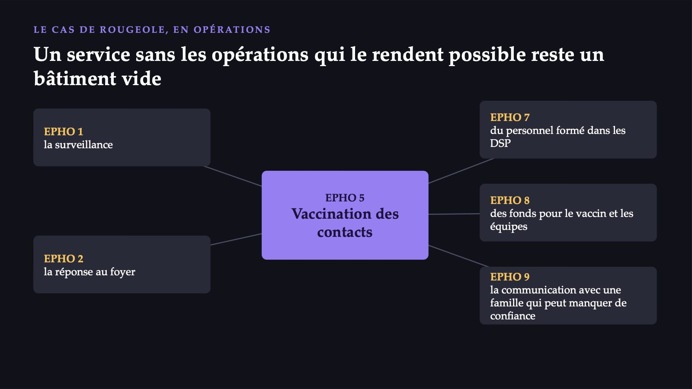
21 / 43Dans quel ordre investiriez-vous ?
 22 / 43
22 / 43La même idée, plusieurs listes
![D’OÙ ELLES VIENNENT ET CE QUI A SUIVI La même idée, plusieurs listes 1988 IOM, États-Unis Trois fonctions de base : évaluation, élaboration des politiques, assurance. 1994 Dix services, États-Unis Révisés en 2020, avec l’équité au centre. 2012 Dix OESP Bureau régional de l’OMS pour l’Europe. 2015 Autoévaluation L’instrument européen : des critères vérifiables pour chaque opération. 2021 12 fonctions, OMS Liste mondiale unifiée (EPHF). 2024 Guide de l’OMS Application des 12 fonctions ; l’ordre de la liste n’a pas de signification. La liste mondiale désigne distinctement l’engagement communautaire, la qualité et l’équité des services et l’accès aux produits et technologies de santé.](diapozitive/C01/023.jpg) 23 / 43
23 / 431978
![LES SOINS DE SANTÉ PRIMAIRES Le cas a commencé dans un cabinet de médecine de famille 1978 Alma-Ata Les soins de santé primaires, clé de l’objectif « La santé pour tous » : des soins essentiels, accessibles à tous, avec la participation de la communauté, à un coût que le pays peut supporter. 2018 Astana Une nouvelle déclaration réaffirme le rôle central des soins primaires et renouvelle l’engagement politique des gouvernements. Niveau de soins (le cabinet) et approche du système (accès universel, participation, action intersectorielle) : le médecin de famille du cas travaille dans les deux sens.](diapozitive/C01/024.jpg) 24 / 43
24 / 43Les institutions derrière le cas
![LOI N° 95/2006 · QUI FAIT LA SANTÉ PUBLIQUE Les institutions derrière le cas Ministère de la Santé autorité centrale DSP des comtés et de la municipalité de Bucarest services déconcentrés, dotés de la personnalité juridique INSP sous la tutelle du MS : guide techniquement le réseau, surveille l’état de santé CNSCBT Registre unique des maladies transmissibles (HG n° 657/2022) CNAS assurance maladie sociale ; caisses des comtés subordonnées ANMCS sous l’autorité du Gouvernement : standardise, évalue, accrédite (loi n° 185/2017) INS hors du réseau du MS ; publie les dénominateurs des indicateurs](diapozitive/C01/025.jpg) 25 / 43
25 / 43Du cabinet au niveau européen et mondial
![LE CIRCUIT DE L’INFORMATION · ILLUSTRATION SIMPLIFIÉE Du cabinet au niveau européen et mondial Le médecin de famille déclare le cas DSP enquête sur le foyer, vaccine les contacts INSP, par le CNSCBT registre unique, analyse nationale ECDC analyse pour l’ensemble de l’Union OMS Règlement sanitaire international (2005) Dans l’Union, le réseau de surveillance fonctionne selon le règlement (UE) 2022/2371 ; à la Commission, la politique de santé relève de la DG SANTE. L’OMS définit l’urgence de santé publique de portée internationale : un événement extraordinaire, qui constitue un risque pour d’autres États du fait de la propagation de la maladie. Illustration construite pour ce cours à partir des rôles fixés par la loi ; ce n’est pas la procédure pas à pas de la surveillance de la rougeole.](diapozitive/C01/026.jpg) 26 / 43
26 / 43Trois minutes au téléphone
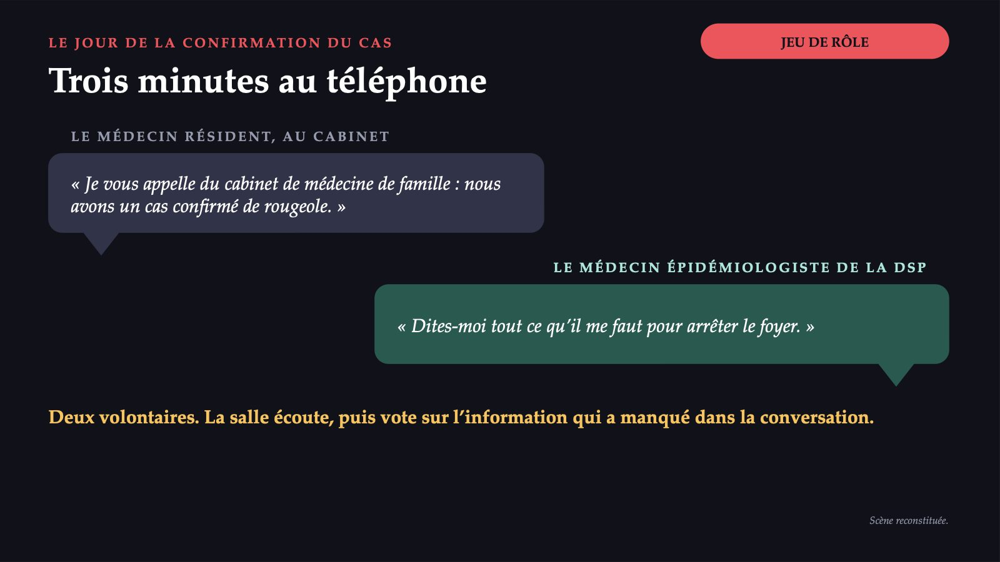
27 / 4310′
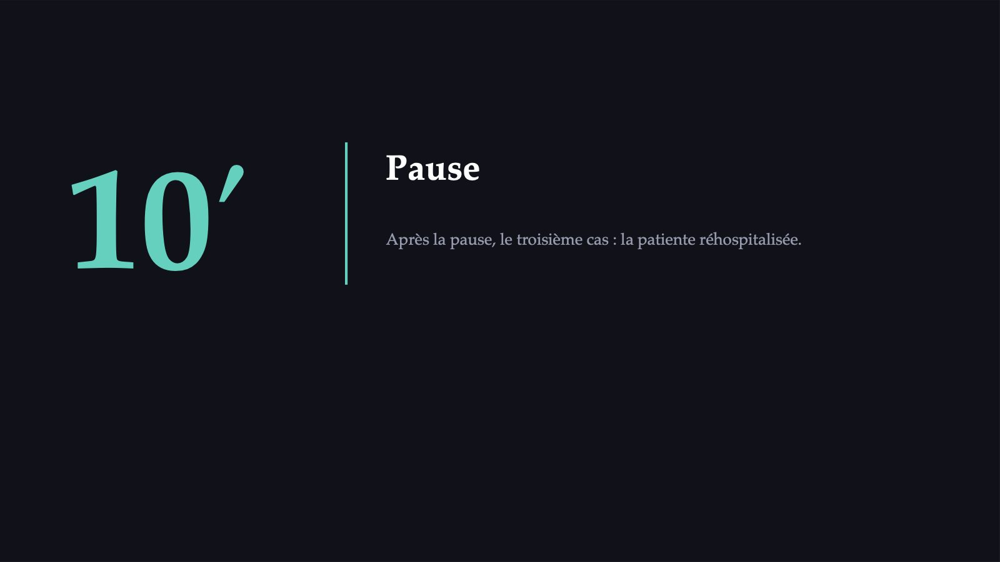
28 / 43La patiente réhospitalisée
![Un village de colline en Roumanie Photo : Delia2 · CC BY-SA 4.0 · Wikimedia Commons LE SERVICE DE MÉDECINE INTERNE La patiente réhospitalisée Salle trois : soixante-quatorze ans, insuffisance cardiaque, quatrième hospitalisation cette année. Le traitement est correct. Ce n’est que maintenant que vous apprenez ce que la feuille d’observation ne disait pas : elle vit seule, dans un village éloigné de la ville ; sa retraite suffit mal pour les médicaments et le bois de chauffage ; le médecin de famille a son cabinet dans une autre commune. Chaque hospitalisation a été traitée comme un épisode médical. Où sont les causes ?](diapozitive/C01/029.jpg) 29 / 43
29 / 43Qu’est-ce qui explique le mieux les réhospitalisations de la patiente ?
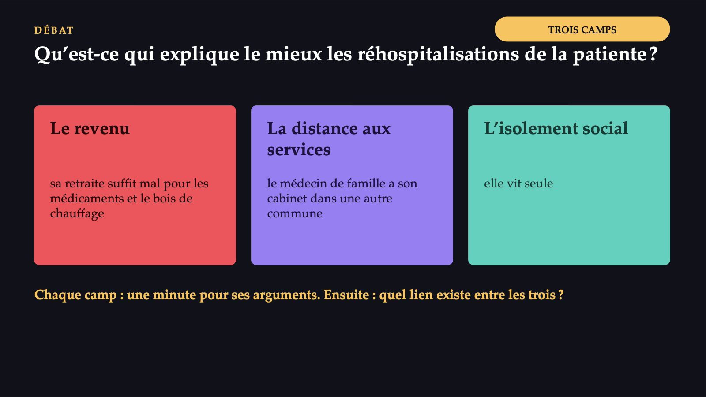
30 / 43La réponse apparaît après la séance
La réponse apparaît après la séance
« La carte du territoire de la santé » : quatre éléments égaux
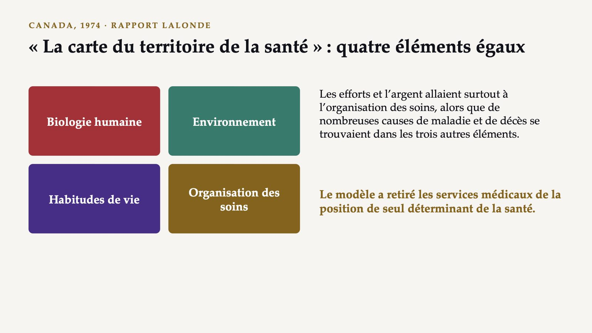
32 / 43Des couches d’influence autour de la personne
![AVEC VOTRE VOISIN DAHLGREN ET WHITEHEAD, 1991 Des couches d’influence autour de la personne Conditions socio-économiques, culturelles et environnementales Conditions de vie et de travail, dont les services de santé Réseaux sociaux et communautaires Mode de vie Âge, sexe Le centre (âge, sexe, facteurs constitutionnels) n’est pas une couche. Placez sur les couches la situation de la patiente : l’alimentation et l’observance du traitement elle vit seule un logement difficile à chauffer le trajet jusqu’au médecin de famille le niveau des retraites Le modèle n’attribue pas de poids numériques aux couches.](diapozitive/C01/033.jpg) 33 / 43
33 / 43La réponse apparaît après la séance
La réponse apparaît après la séance
Les déterminants sociaux de la santé
![TERME NOUVEAU 2 SUR 3 Les déterminants sociaux de la santé Tout ce qui arrive à la santé d’une personne en dehors du cabinet : là où elle naît, grandit, vit, travaille et vieillit. Commission de l’OMS sur les déterminants sociaux, 2008, « Closing the gap in a generation » : ces conditions sont façonnées par la répartition du pouvoir, de l’argent et des ressources. Trois principes d’action : les conditions de la vie quotidienne la répartition du pouvoir, de l’argent et des ressources mesurer le problème et évaluer l’action Pour la patiente : la retraite, le bois de chauffage, le village, le trajet jusqu’au médecin.](diapozitive/C01/035.jpg) 35 / 43
35 / 43Échelon par échelon : la santé par quintile de revenu
![TERME NOUVEAU 3 SUR 3 · LE GRADIENT SOCIAL Échelon par échelon : la santé par quintile de revenu « À chaque échelon de revenu ou d’éducation en plus, la santé est, en moyenne, un peu meilleure. » 57,3 67,0 la plus pauvre 61,1 64,4 deuxième 67,8 70,6 troisième 73,2 77,5 quatrième 79,3 86,1 la plus riche quintile de revenu UE Roumanie Part des personnes de 16 ans et plus qui déclarent une santé bonne ou très bonne, 2025, %. UE : augmente à chaque échelon. Roumanie : le deuxième quintile sous le premier, puis une hausse. Entre les extrêmes : 19,1 points de pourcentage en Roumanie, 22,0 dans l’UE. Source : Eurostat, enquête de l’UE sur les revenus et les conditions de vie (hlth_silc_10), 2025.](diapozitive/C01/036.jpg) 36 / 43
36 / 4373,3 %
 37 / 43
37 / 43Ce que peut faire le médecin du service
![DES DÉTERMINANTS À L’ACTION Ce que peut faire le médecin du service Structurel les politiques : protection sociale, éducation, logement, transports, santé dans toutes les politiques Communautaire les programmes : assistance médicale communautaire, médiateurs sanitaires, réseaux de soutien Individuel éducation pour la santé, soutien à l’autosoin, dépistage actif Le médecin ne peut pas changer la retraite de la patiente. Il peut découvrir pourquoi elle est réhospitalisée, associer l’assistant social et l’infirmier communautaire, parler au médecin de famille et signaler le problème à ceux qui décident. Les trois niveaux : synthèse didactique du cours. Rapport Marmot (Angleterre, 2010) : six objectifs de politique pour réduire les inégalités de santé.](diapozitive/C01/038.jpg) 38 / 43
38 / 43La garde, le cabinet, le service : dix questions
39 / 43La réponse apparaît après la séance
La réponse apparaît après la séance
Cinq idées du cours d’aujourd’hui
![À RETENIR Cinq idées du cours d’aujourd’hui 1 La santé publique : la science et l’art de prévenir la maladie, de prolonger la vie et de promouvoir la santé par les efforts organisés de la société. 2 La loi roumaine : « l’assistance de santé publique » est l’effort ; « la santé publique », l’état de santé de la population. 3 OESP, 2012 : cinq opérations de base et cinq qui les rendent possibles, plus les opérations d’information ; OMS : une liste mondiale de 12 fonctions. 4 Les soins de santé primaires, d’Alma-Ata (1978) à Astana (2018) : le lieu où la clinique et la santé publique se rencontrent chaque jour. 5 Les déterminants vont des comportements aux conditions de vie et à la répartition du pouvoir et des ressources ; le gradient suit l’échelle sociale.](diapozitive/C01/041.jpg) 41 / 43
41 / 43Ce que vous ferez autrement à la garde, au cabinet et dans le service
![DEMAIN, EN TANT QUE MÉDECINS Ce que vous ferez autrement à la garde, au cabinet et dans le service 1 Posez aussi la seconde question : combien de patients comme celui-ci existe-t-il et qu’aurait-on pu faire avant ? 2 Déclarez les cas à déclarer : votre déclaration est le premier maillon de la surveillance. 3 Demandez au patient réhospitalisé à répétition où il habite, avec qui et de quoi il vit : ce sont des informations cliniques. 4 Quand un problème se répète, signalez-le à ceux qui peuvent décider.](diapozitive/C01/042.jpg) 42 / 43
42 / 43Trois questions pour finir
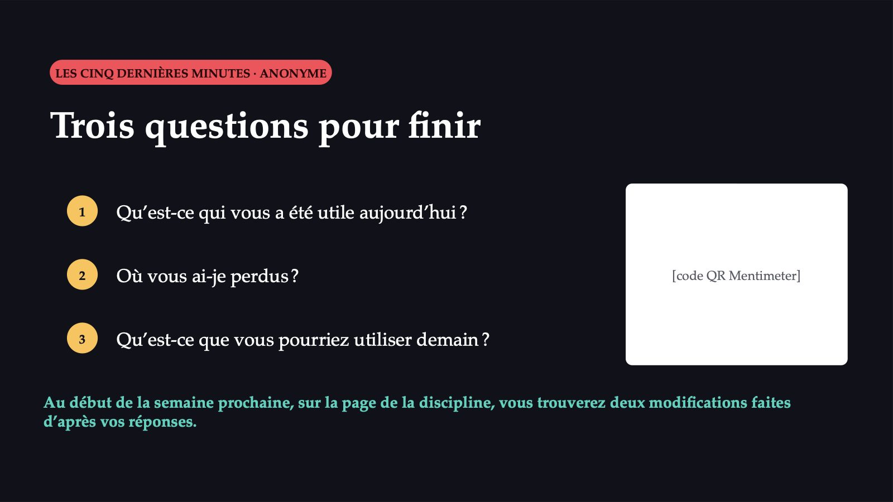
43 / 43Flèches ou espace : navigation · O : vue d’ensemble · N : notes de l’intervenant · F : plein écran · Échap : fermer